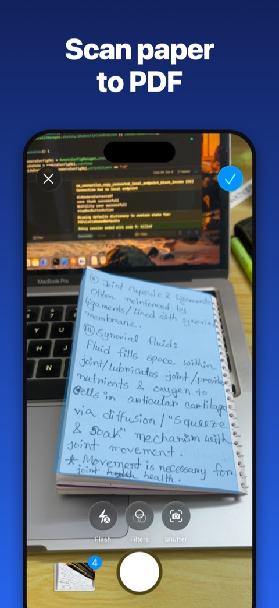

How to scan and sign a paper document on iPhone
Someone hands you a paper form and asks you to email it back signed. You can do the whole thing with your phone.
Updated November 2026
Free way: Notes, then Markup
- In Notes, open a note, tap the camera or paperclip button and choose Scan Documents. Save the scan.
- Share the scan as a PDF to Files, open it, and tap Markup.
- Tap +, Add Signature, and place it on the line.
It works, but you move between two apps, and the signature is a saved stamp you resize by hand.
One app: PDF Pencil
- In PDF Pencil, start a scan. It captures the page automatically, then crops and straightens it. Choose black-and-white for a clean, photocopy look.
- Scan more pages if the form has them.
- Fill in any blanks and sign on the page with your finger or Apple Pencil.
- Share the signed PDF by email or message.

Tips for a clean scan
- Lay the paper flat on a dark, plain surface in good light.
- Hold the phone straight above the page to avoid a slanted look.
- Black-and-white mode makes text crisp and keeps the file small for email.
Common questions
Can I scan receipts and business cards too?
Yes. Anything on paper works: receipts, cards, contracts and handwritten notes.
Can I turn photos I already took into a PDF?
Yes. PDF Pencil can convert photos from your library into a PDF.